心流空间 · 本轮 UI 优化预览
主标题 -11%、正文 -9%，保留原字号之间的比例和字体加载。04 习惯胶囊文字/图标 -9%、高度约 -10%。02/04 原有条件面板共用半透明玻璃样式；所有截图来自实际运行的生产构建和真实点击操作，没有添加动画、背景或更改文案。
02 原触发条件保留：输入较短描述（如「自由」）并提交后出现后续选择。较完整描述仍直接进入 03。04 选择一个或多个习惯后点击输入框右侧的「慢慢聊聊」，进入细问面板。
实际检查：21 个页面/尺寸组合、6 个交互触发面板、标题/正文比例、字体及其他控件字号保持、父容器透明、面板点击区、选择/返回/下一项与答案保留通过。原功能回归覆盖 28 个页面/尺寸组合，短输入与三类模拟语音测试通过。真实设备麦克风没有实测。
| 项目 | 实际修改 |
|---|---|
| 七页主标题 / 正文 | -11% / -9%；500 / 400 字重，正文行距 1.8 |
| 02 弹窗 | 桌面宽度 +22.5%；标题 +20%，选择项及继续按钮 +15% |
| 04 习惯选项 | 文字与图标 -9%，高度约 -10%，最小点击高度 44px |
| 04 弹窗 | 桌面宽度 +22.5%；细问标题 +20%，选项/操作按钮 +15% |
| 共用玻璃样式 | 背景透明度 0.28，12px blur，低透明描边及柔和阴影；无全屏暗遮罩 |
1920 屏幕的原 02 面板已有约 787px 宽，因此按比例扩大为约 964px；1366 屏幕约 686px。04 分别约 1040px / 740px。手机两处限制为 358px（390 视口），保留两侧 16px；高度随内容调整，必要时在面板内滚动。
Page 02 · 实际交互触发的玻璃面板
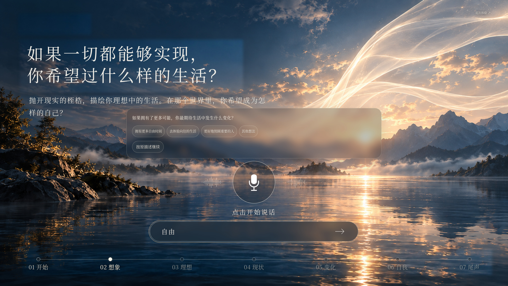
1366×768 笔记本
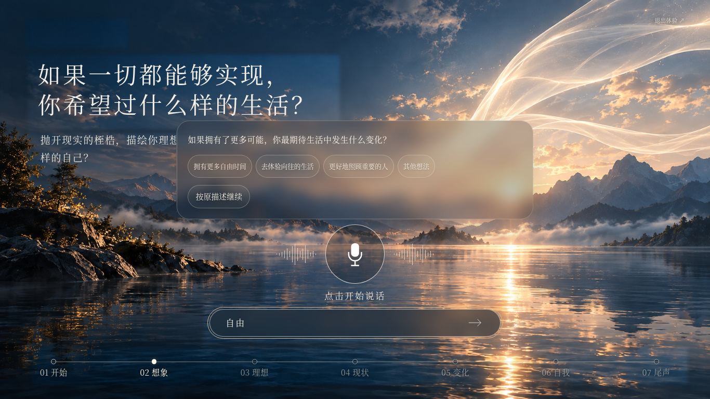
390 宽手机
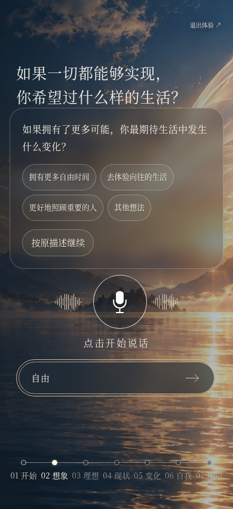
Page 04 · 实际交互触发的玻璃面板
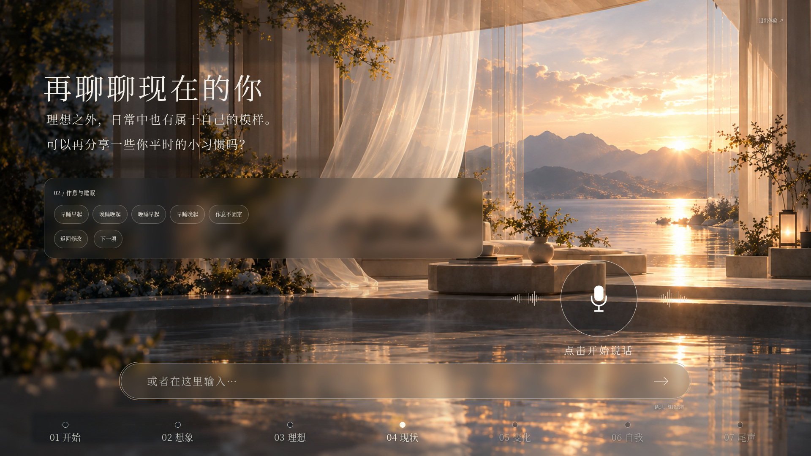
1366×768 笔记本
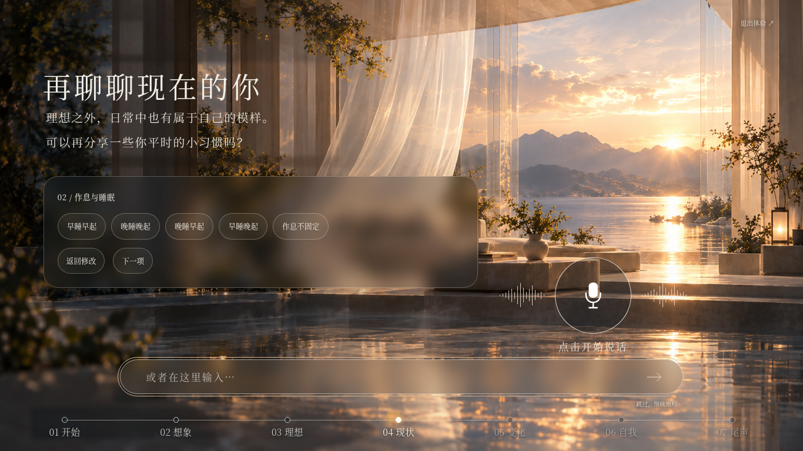
390 宽手机
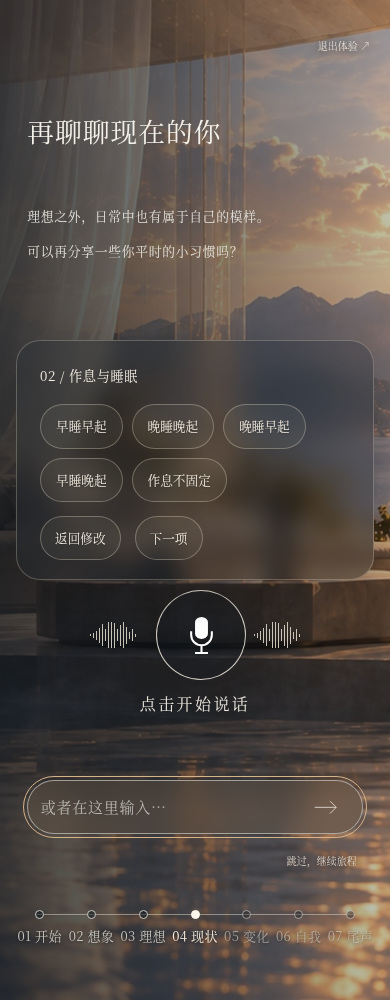
Page 04 · 缩小后的习惯选项及选择状态
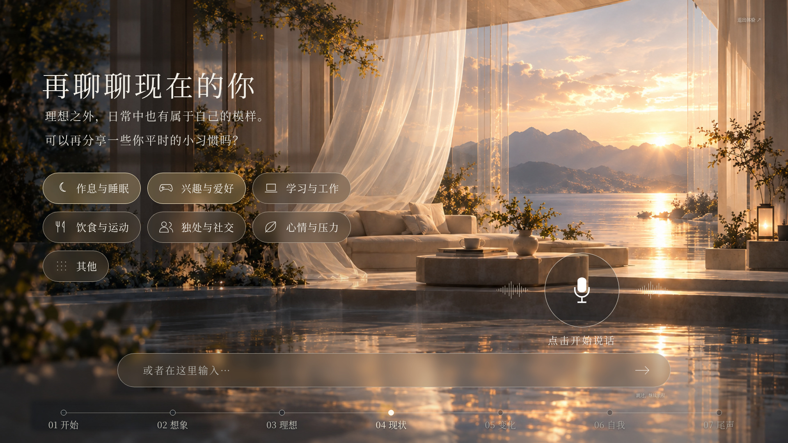
手机选择状态
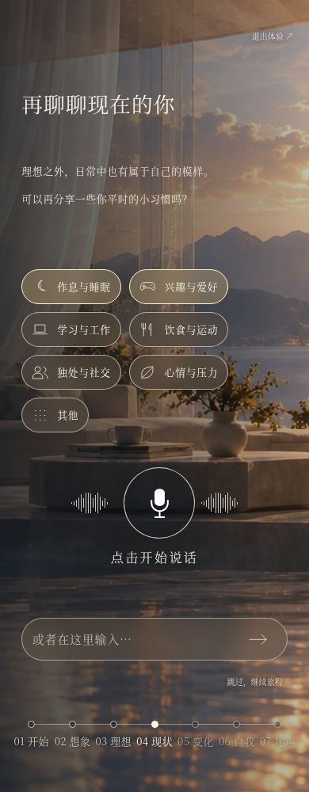
七页完整预览
Page 01
1366×768 笔记本
390 宽手机
Page 02
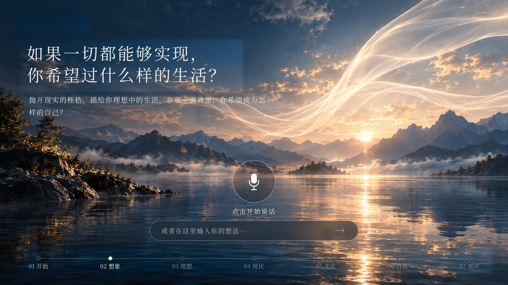
1366×768 笔记本
390 宽手机
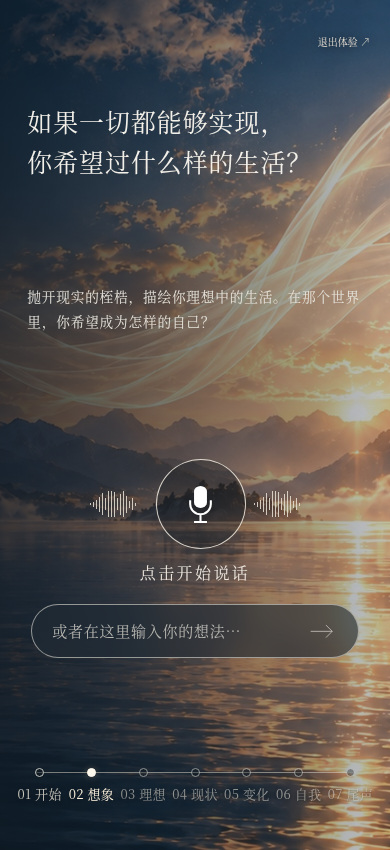
Page 03
1366×768 笔记本
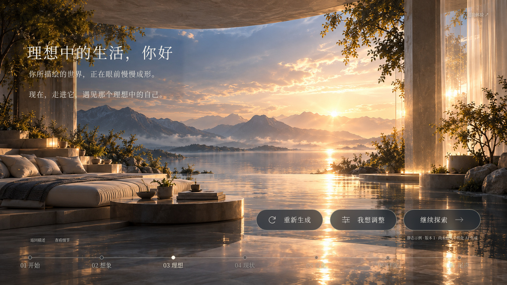
390 宽手机
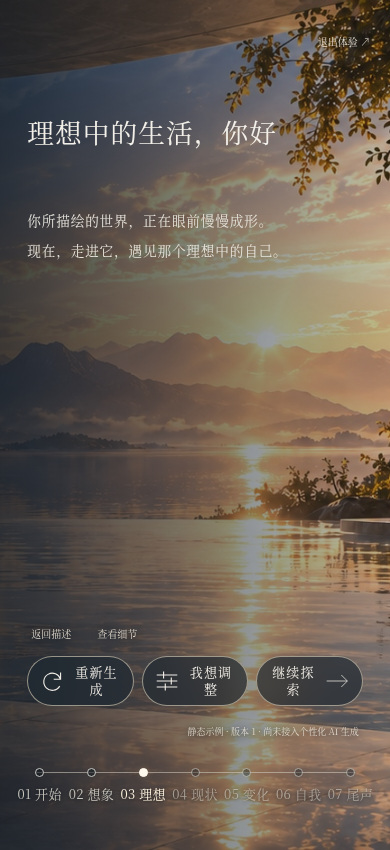
Page 04
1366×768 笔记本
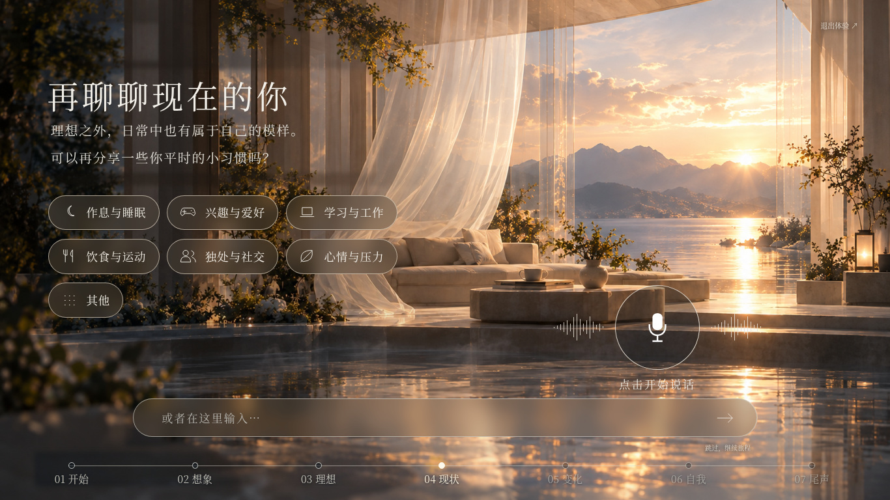
390 宽手机
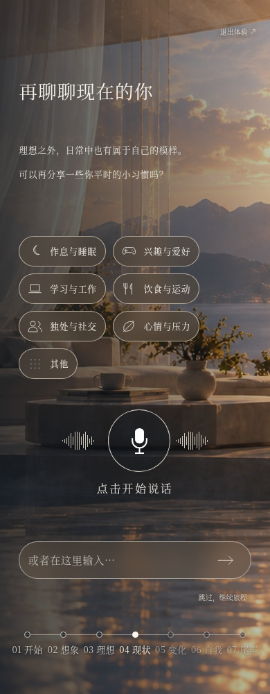
Page 05
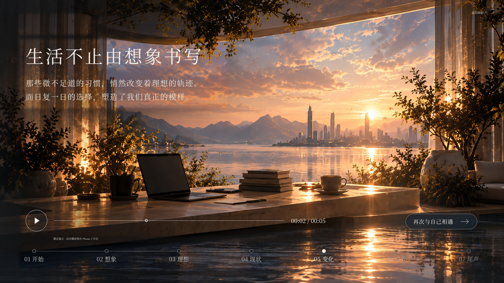
1366×768 笔记本
390 宽手机
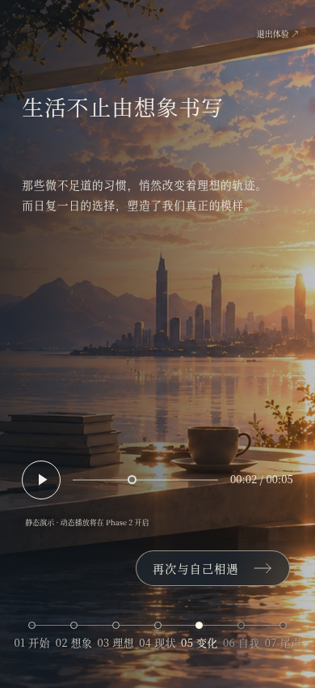
Page 06
1366×768 笔记本
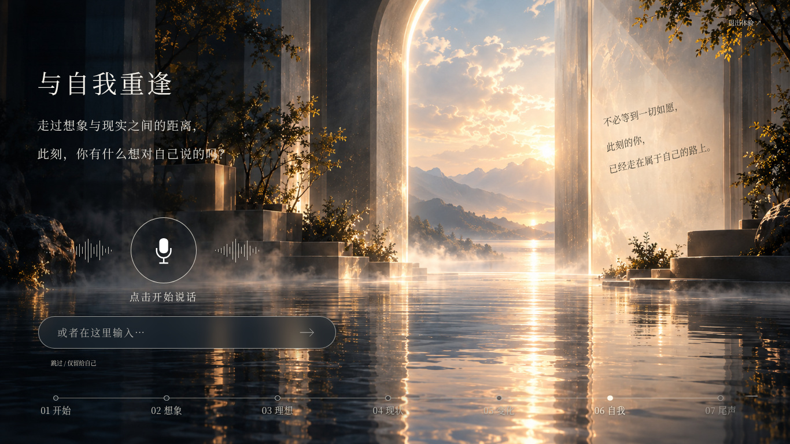
390 宽手机
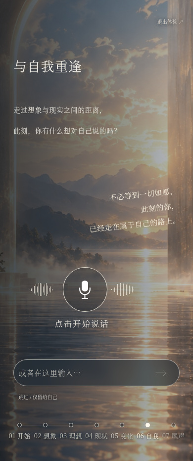
Page 07
1366×768 笔记本
390 宽手机
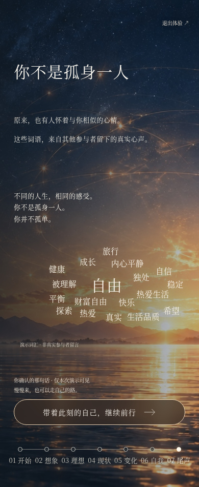
本轮保留既有字体家族及其加载方式，没有新增字体文件。未开始动态光影阶段。